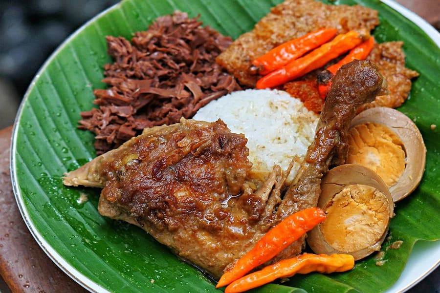

Gudeg
Gudeg telah dikenal oleh masyarakat Indonesia khususnya sebagai makanan khas dari Kota Yogyakarta. Popularitas tersebut juga yang membuat Yogyakarta dikenal dengan nama Kota Gudeg. Gudeg adalah makanan tradisional yang terbuat dari Nangka muda (nangka) yang direbus selama beberapa jam dengan gula kelapa serta santan. Dengan dilengkapi dengan berbagai bumbu tambahan membuat Gudeg menjadi terasa manis dilidah dan memiliki rasa yang khas dan enak sesuai dengan selera masyarakat Jawa pada umumnya.
Pada penyajiannya, Gudeg biasa di lengkapi dengan nasi putih, ayam, telur rebus, tahu atau tempe, dan rebusan terbuat dari kulit sapi segar atau lebih dikenal dengan nama sambal goreng krecek. Ada beberapa jenis Gudeg yang dikenal saat ini yaitu jenis Gudeg kering dan Gudeg basah. Gudeg kering hanya memiliki sedikit santan sementara Gudeg basah mencakup lebih banyak susu kelapa atau santan. Jenis-jenis Gudeg tersebut juga mempengaruhi rasa yang dimiliki oleh Gudeg. Meskipun biasanya manis, Gudeg kadang juga memiliki rasa yang pedas seperti yang terdapat pada wilayah Jawa Timur.
Awalnya Gudeg yang dikenal oleh masyarakat Indonesia khususnya Yogyakarta jaman dahulu adalah Gudeg Basah. Seiring perkembangan jaman, kebutuhan Gudeg untuk oleh-oleh yang semakin berkembang juga seirama dengan munculnya Gudeg kering. Gudeg kering baru ditemukan sekitar enam dasawarsa yang lalu. Sifatnya yang kering membuat gudeg tersebut tahan lama dan sering dimanfaatkan sebagai oleh-oleh yang tentu saja berdampak dengan munculnya industri rumahan yang menyajikan oleh-oleh Gudeg khas Yogyakarta.
Keunikan lainnya dari masakan gudeg adalah kemasannya. Apabila Anda berbelanja Gudeg sebagai makanan khas Yogyakarta, tidak jarang Gudeg tersebut dikemas dengan menggunakan besek. Besek adalah bungkus dari anyaman bamboo yang dibentuk sedemikian rupa berbentuk segi empat dan dapat digunakan sebagai tempat Makanan. Selain itu Gudeg juga sering dikemas menggunakan kendil yaitu berupa wadah yang terbuat dari tanah liat. Kemasan tersebut biasanya banyak ditemukan pada para penjual gudeg yang telah terkenal di Yogyakarta seperti Gudeg Wijilan. Wijilan memang merupakan sebuah areal yang terkenal dengan penjual Gudegnya.
Resep Membuat Gudeg
Bahan isi:- 1 kg nangka muda
- 5 butir telur ayam rebus, kupas
- 2 lembar daun salam
- 3 lembar daun jeruk
- 3 cm lengkuas, memarkan
- 120 g gula Jawa yang cokelat tua
- 1.5 liter santan sedang
- 500 ml santan kental
- 8 butir bawang merah
- 5 siung bawang putih
- 5 butir kemiri
- 1 sdm ketumbar
- 1 potong terasi
- 1/4 sdt jintan
- 2 sdt garam
- Sambal goreng krecek
- Opor ayam
- Sambal bajak
- Potong nangka muda berbentuk dadu besar. Rebus nangka muda dalam air atau air kelapa tua secukupnya hingga lunak. Angkat dan tiriskan nangka muda.
- Bumbu Halus: Haluskan semua bahan bumbu dengan blender atau ulekan hingga halus benar.
- Masukkan nangka muda dan telur ke dalam panci. Tuangi santan, masukkan bumbu halus, daun salam, daun jeruk, lengkuas dan gula merah.
- Masak dengan api sedang hingga bumbu meresap dan kuahnya susut.
- Tuangkan santan kental. Masak dengan api hingga kuah benar-benar susut. Matikan api.
- Sajikan gudeg dengan pelengkapnya.